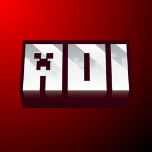

🖥 Windows
Baixa o agent.py e o INICIAR-PC.bat. Deixe os dois na mesma pasta e dê dois cliques no .bat (precisa do Python instalado). O painel abre sozinho em localhost.
💿 Criar app instalável (.exe) — kit
StarControlBaixa o agent.py e o INICIAR-PC.bat. Deixe os dois na mesma pasta e dê dois cliques no .bat (precisa do Python instalado). O painel abre sozinho em localhost.
💿 Criar app instalável (.exe) — kitInstale como app direto do navegador. Ou escaneie o QR Code para abrir este site no celular.
Use o celular como segundo monitor do PC, só na rede local (estilo spacedesk). Versão independente (servidor próprio, sem navegador no PC). O modo segundo monitor também já vem embutido no StarControl.
⬇ Baixar StarMonitor (.zip)Código de pareamento
🔒 Só funciona com o celular no mesmo Wi-Fi deste PC
Iniciando...
🔴 Agente PC: Desconectado (rode o INICIAR-PC.bat)
Para controlar o Windows, use o painel local: http://localhost:8766 (abre sozinho ao rodar o INICIAR-PC.bat).
Conecte o celular ao mesmo Wi-Fi do PC (sem dados móveis nem VPN).